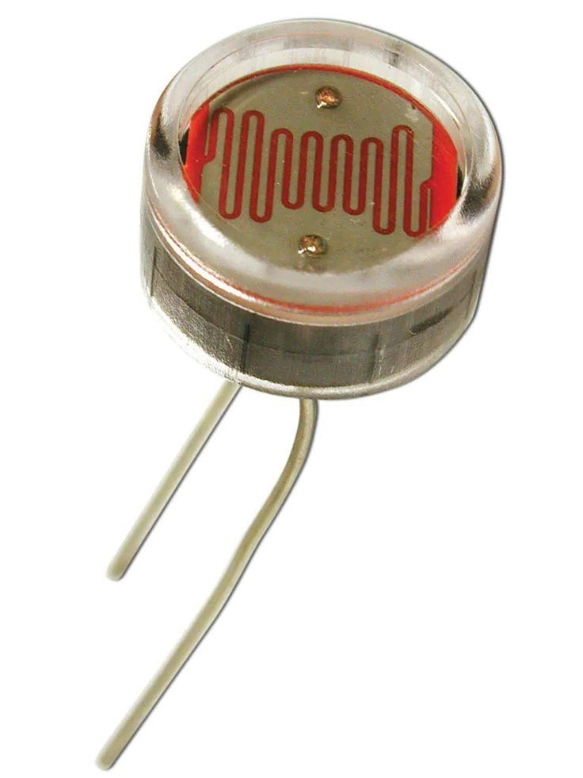
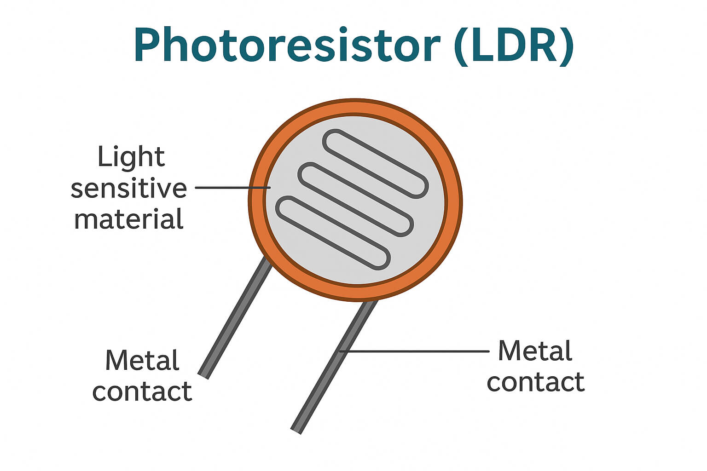
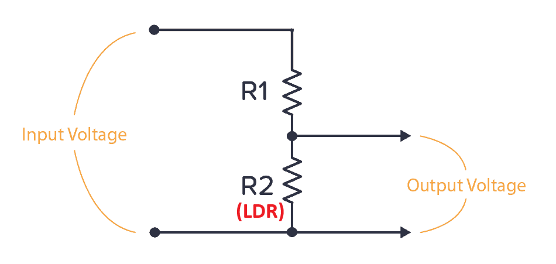
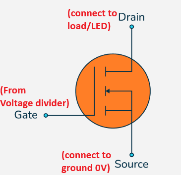
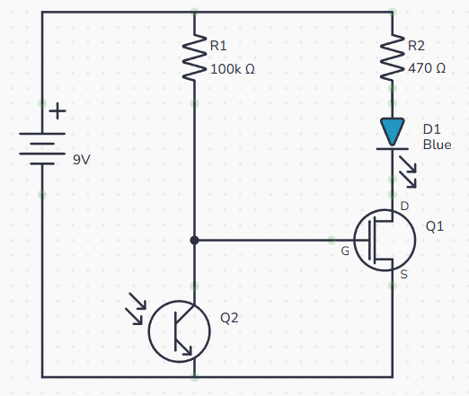
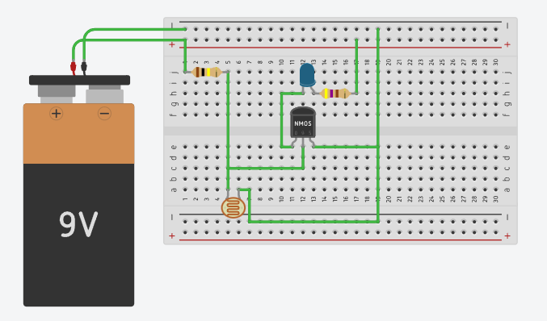
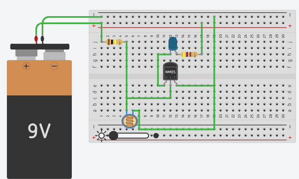

Build a basic high-efficiency automatic night light using an N-Channel MOSFET and Photoresistor (LDR) for minimal standby power consumption.
This project details the step-by-step design, assembly, and testing of an automatic light-sensing switch using a photoresistor and MOSFET.
The circuit utilizes a Light Dependent Resistor (LDR) to detect ambient light, a voltage divider to translate resistance changes into a dynamic control voltage, and an N-Channel MOSFET to automatically toggle an LED load ON or OFF.
An LDR (Photoresistor) is a passive semiconductor component whose electrical resistance varies inversely with ambient light intensity:

Physical Photoresistor (LDR)

Photoresistor Internal Structure
A single photoresistor cannot output a changing voltage on its own. By placing a fixed or adjustable resistor in series with the LDR across a power supply (VCC = 9V), we create a functional voltage divider circuit.

Voltage Divider Schematic
Voltage Divider Behavior:
An N-Channel MOSFET (e.g., BS170 or 2N7000) acts as an electronic switch controlled purely by voltage applied to its Gate (G) pin relative to its Source (S) pin (VGS).

N-Channel MOSFET Pin Configuration
Operating States:

Full Circuit Schematic Diagram
| # | Component | Function in Circuit |
|---|---|---|
| 1 | N-Channel MOSFET (BS170 / 2N7000) | Electronic switch controlling the LED load |
| 2 | Photoresistor (5mm LDR) | Senses ambient light levels |
| 3 | 100 kΩ Resistor | Forms top half of voltage divider / gate current limiting |
| 4 | 470 Ω Resistor | Limits current through the LED to prevent burnout |
| 5 | Standard 5mm LED | Visual output indicator (lights up in darkness) |
| 6 | 9V Battery & Snap Connector | Main DC power supply |
| 7 | Solderless Breadboard & Jumpers | Circuit assembly platform |
This circuit can be built and interactively tested in Tinkercad Circuits. During daytime conditions, the LED remains off; when darkness is simulated, the LED automatically turns on.

Daytime State (LED Off)

Nighttime State (LED On)
Practical Applications: This core circuit concept serves as the base for dusk-to-dawn outdoor lighting, automatic nightlights, solar street lamp controllers, and ambient light sensors.
🚀 Open Interactive Tinkercad Simulation